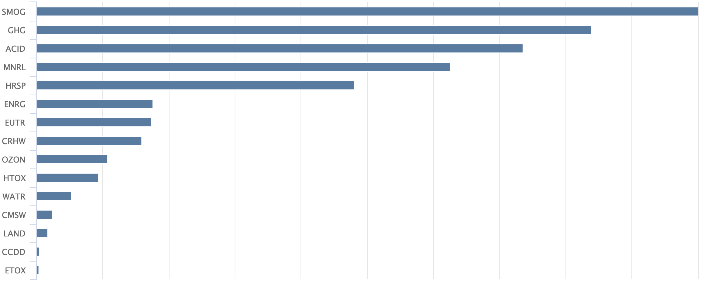
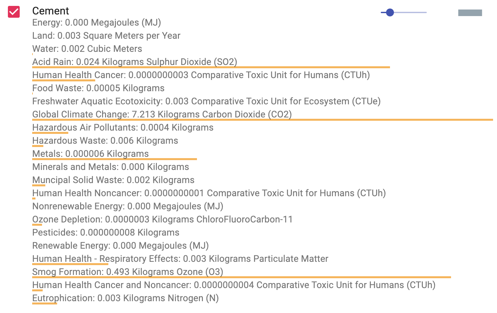
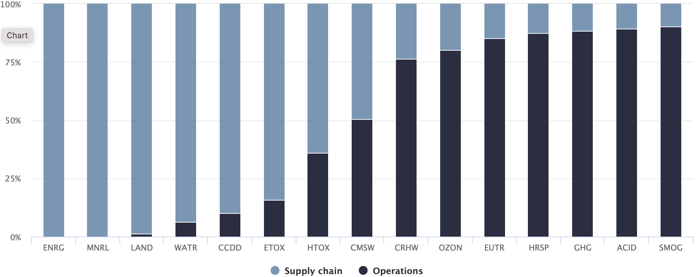
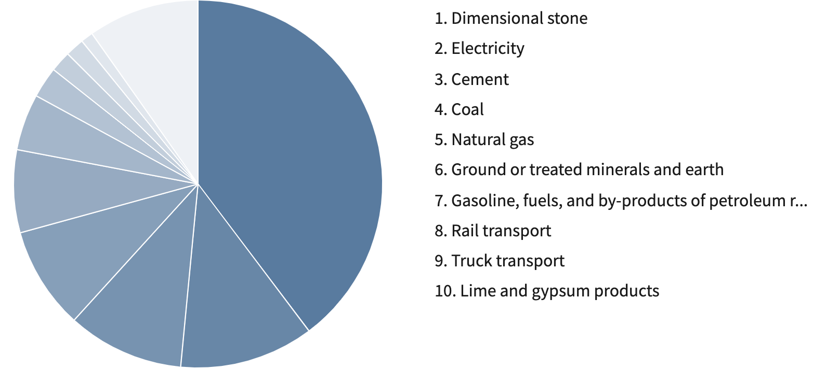
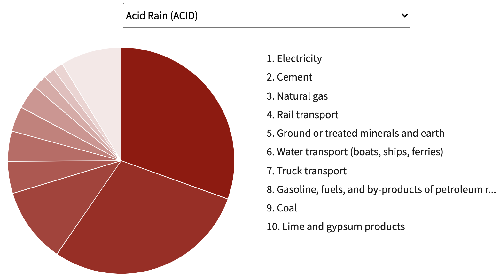

This industry comprises establishments primarily engaged in manufacturing portland, natural, masonry, pozzolanic, and other hydraulic cements. Cement manufacturing establishments may calcine earths or mine, quarry, manufacture, or purchase lime. (NAICS 2007 description)
Top Issues

TO DO: Sort the IO Chart by issue intensity. Display totals for one year.

Supply Chain vs Operations

NOTE: Bar charts are easier to read and allow quantities to be displayed for printing.
We could default to bar chart displays in the update.
Direct Inflow for Cement
Direct purchases potentially contributing to overall environmental issues

Impacts of Direct Inflow
TO DO: Use the IO Chart to display the suppliers contributing to each impact.

Also "Indirect Inflow for Cement" and "Impacts of Indirect Inflow for Cement" (in page's hidden comments here)
This information represents the life cycle environmental performance of an average provider of Cement in the US. This information is meant to serve as a starting place to help organizations engage in life cycle thinking and action.
Alternative way to present the Supply Chain Upstream-Commodites-Downstream columns below.
Commodities (operations) are shifted to the right column. Scope2 is primarily energy purchases according to Wes.
Value Chain
Inflow
Before Purchases
Indirect - Scope 3
From Purchases
Indirect - Scope 2
Outflow
Direct Emissions
From owned or controlled sources - Scope 1